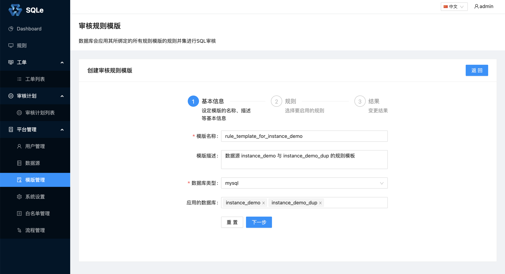

规则模板管理
审核规则
审核规则是依据数据库特性经过长期实践总结出的一些规范。
SQLE 默认支持 70 余条 MySQL 审核规则。SQLE企业版额外支持部分企业版规则
审核规则有 4 个规则等级（严重级别由高到低）：
- Error
- Warn
- Notice
- Normal
部分规则还带有规则值：
- 规则「建议使用规定的数据库排序规则」 的规则值为 utf8mb4_0900_ai_ci；
- 规则「复合索引的列数量不建议超过阈值」 的规则值为 3；
- ...
针对不同的数据源，规则等级和规则值都是可以自定义的，详情见下一小节。
规则模板
不同数据源上的规范可能不同，即它们的审核规则集可能是不同的。在 SQLE 中，可以使用审核模板为不同的数据源配置不同的审核规则。
在左侧导航栏的「平台管理」中的「模板管理」页面中，点击「创建模板」
步骤 1：
首先填写模板相关描述信息： 
这里将新创建的规则模板同时应用到两个数据源上。
步骤 2：
然后选择需要启用的规则，并根据需求修改规则的规则等级和规则值：
这里仅启用一个审核规则，并且自定义了审核规则的规则等级和规则值（该规则默认的等级为Notice，值为utf8mb4_0900_ai_ci）。